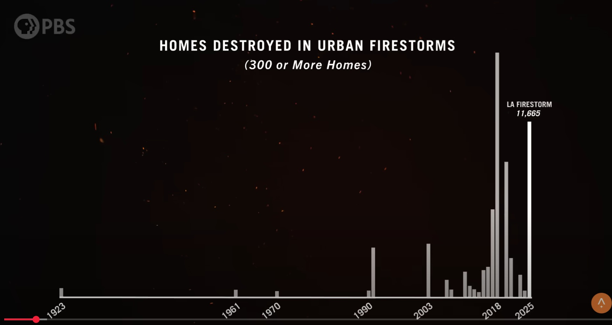
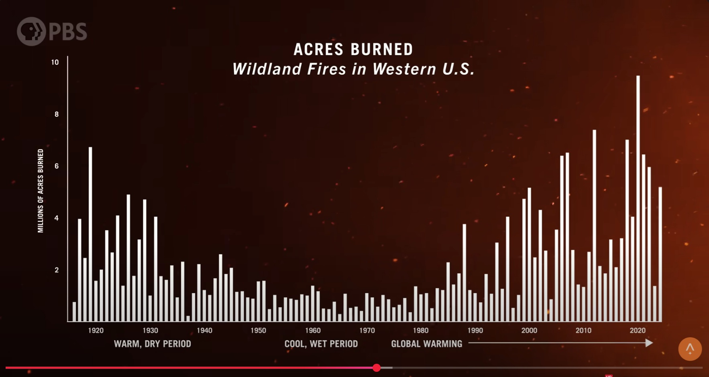
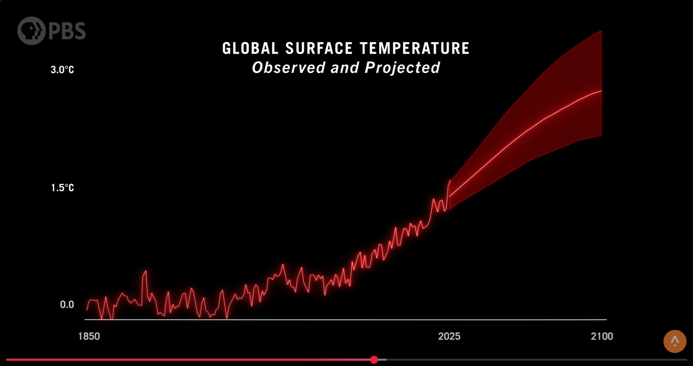

・ 核兵器禁止条約 - Wikipedia ・ 2025年8月4日; ICAN 広島で会見 “日本は核兵器禁止条約の会議参加すべき” ・ 2022年6月16日; 核兵器禁止条約になぜ日本不参加？ 危機感強める被爆者たち ・ 核拡散防止条約 - Wikipedia ・ 孫正義氏が語る、日本経済が「30年停滞した」最大の理由--株主総会で ・ Are We Being Dominated by Modern Stupidity? – The Disturbing Warning of Dietrich Bonhoeffer ・ Climate Extremes: Extreme Weather (Full Documentary) ・ Thorium Nuclear Power ・ Can Copenhagen Atomics Make Thorium Reactors Work? An Exclusive Tour to Find Out ・ Thorium Fuel Cycle Introduction ・ Solving AI’s Energy Problem with Kathryn Huff ・ Thorium Problem ・ Why Isn’t Thorium Changing the World? ・ How U-232 Influenced the Pathway of Thorium Reactors ・ Why Thorium is About to Change the World ・ Thorium Problem ・ How China Won the Thorium Nuclear Energy Race ・ Algorithmic Complacency, and the Dangers of AI ・ Is AI Making Us Dumber? ・■ 今回 8/6 の話題
1. これまでの振り返り（問題認識） 2. 解決の方向性 3. 参議院選挙のための視点 |
images |
|
| Economist | Depth of Thought | Focus Area | Comparable Thinker |
|---|---|---|---|
| 宇沢 弘文 (Hirofumi Uzawa) | High | Foundational questions about growth, sustainability, and social capital. | Keynes, Hayek |
| 伊東 光晴 (Mitsuharu Ito) | Moderate to High | Policy critique, societal impacts, and public engagement. | Galbraith |
| 岩田 規久男 (Kikuo Iwata) | Moderate | Practical monetary policy solutions, focused on inflation and growth. | Friedman |
| Aspect | Keynes | Friedman | Hayek | Galbraith |
|---|---|---|---|---|
| Depth of Thought | High | Moderate | High | Moderate to High |
| Focus | Macroeconomic theory, disequilibrium, and government intervention. | Monetary policy, free markets, and inflation control. | Decentralized knowledge, freedom, and systemic philosophy. | Corporate power, societal impacts, and applied critiques. |
| Role of Government | Active intervention via fiscal policy. | Minimal intervention; focus on monetary policy. | Minimal intervention; emphasis on individual liberty. | Active intervention to address social imbalances. |
| View on Markets | Markets can fail and need correction. | Markets are efficient and self-correcting. | Markets are efficient but require freedom to function. | Markets are imperfect and often distorted by power structures. |
| Comparable Thinker | Uzawa | Iwata | Uzawa | Ito |
| Aspect | Keynes | Friedman |
|---|---|---|
| Economic Context | Developed his ideas during the Great Depression, when markets failed to self-correct, leading to mass unemployment and economic stagnation. | Developed his ideas during the mid-20th century, particularly in response to stagflation (high inflation and unemployment) and perceived failures of Keynesian policies. |
| Philosophy | Believed markets could fail and remain in disequilibrium for extended periods, requiring active government intervention to stabilize the economy. | Believed markets are inherently efficient and self-correcting, and that government intervention often causes more harm than good. |
| Focus | Emphasized aggregate demand as the key driver of economic activity and focused on short-term stabilization through fiscal policy (e.g., government spending and tax cuts). | Emphasized the role of the money supply in controlling inflation and focused on long-term economic stability through monetary policy (e.g., central bank actions). |
| Methodology | Used a macroeconomic approach, focusing on the economy as a whole and the interplay of aggregate variables like demand, employment, and output. | Focused on microeconomic foundations, analyzing individual behavior and its impact on broader economic outcomes, with an emphasis on empirical data. |
| Influence | His work was shaped by the failures of laissez-faire economics during the Great Depression, leading to his advocacy for government intervention to address systemic issues. | His work was shaped by the failures of Keynesian policies during the stagflation era, leading to his emphasis on free markets and the dangers of excessive government control. |
|
 from The REAL Story of the LA Fires |
 from The REAL Story of the LA Fires |
|
 from The REAL Story of the LA Fires |
from The REAL Story of the LA Fires |
{kind=link}
{kind=link}
{kind=link}
{kind=link}
{kind=link}